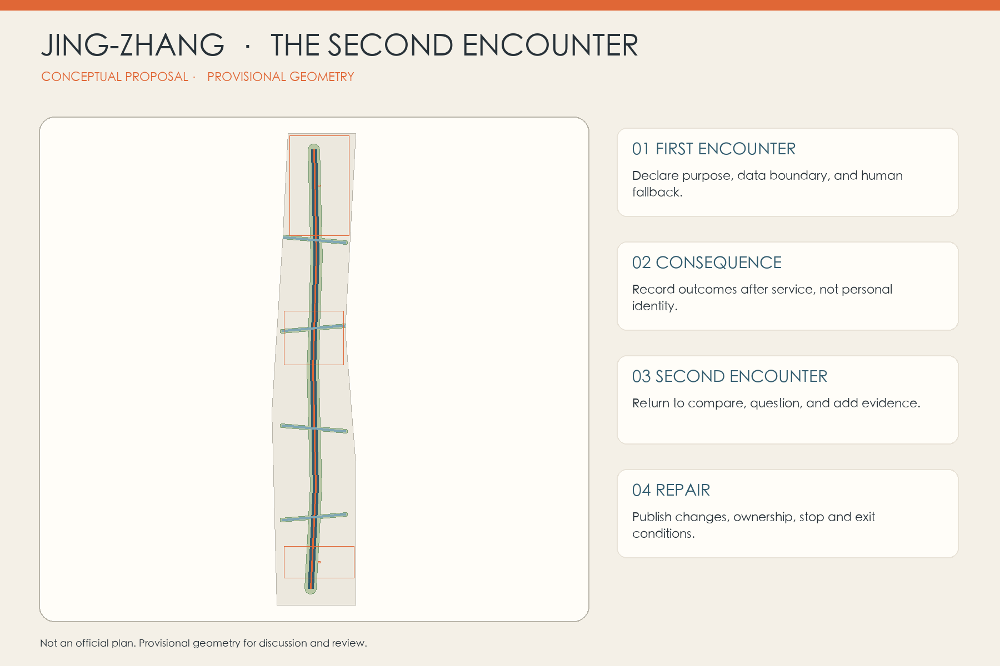
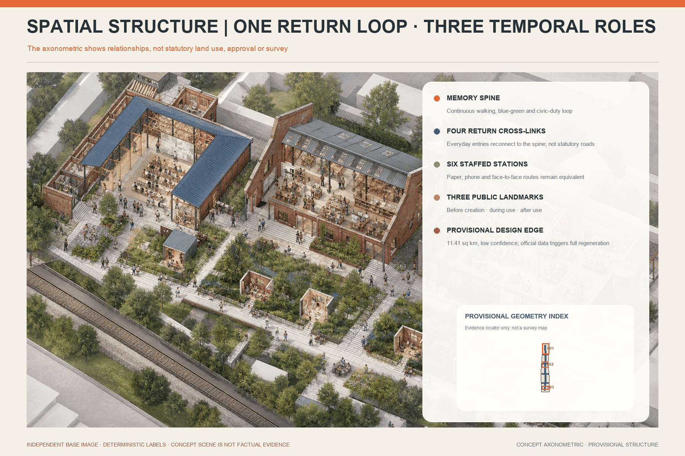
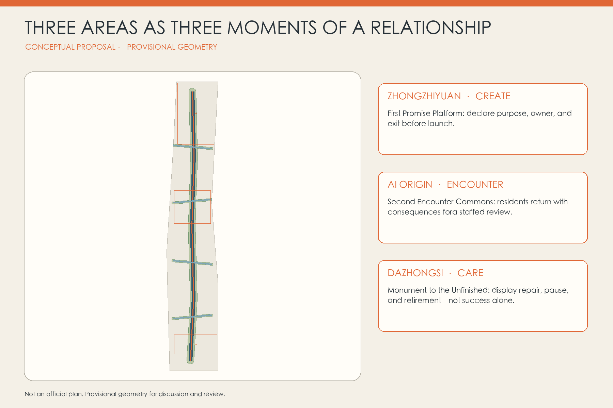
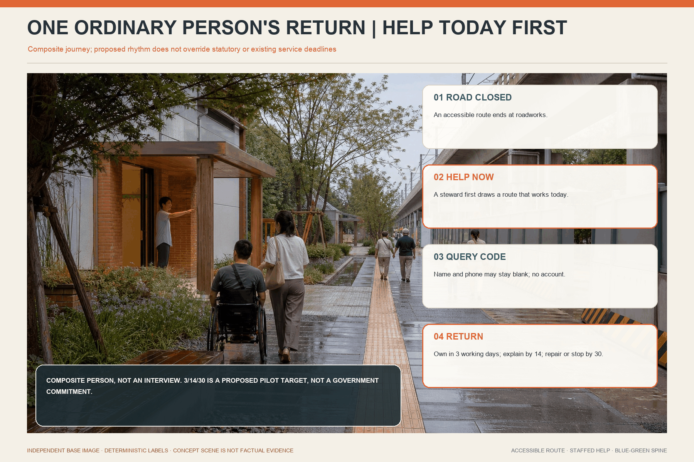
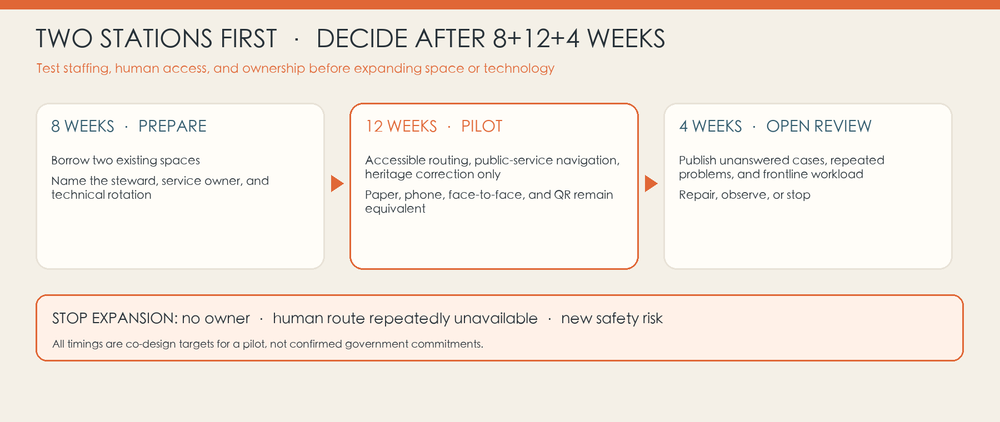
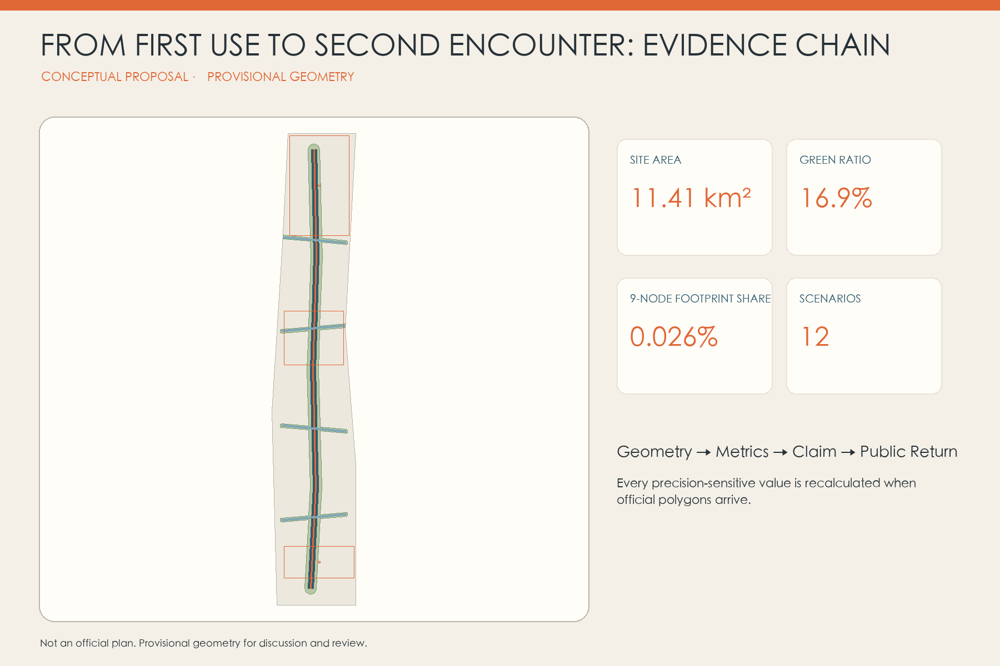

JING-ZHANG · THE SECOND ENCOUNTER
Urban innovation is judged not at launch but at the second encounter: a civic route for follow-up, acknowledgement, and repair after AI service use.
JING-ZHANG · THE SECOND ENCOUNTER
Urban innovation is judged not at launch, but at the second encounter.
AI is most visible on release day, yet public value appears afterwards. When an older resident is misdirected, a student receives unsuitable guidance, or a small merchant is wrongly filtered by an enterprise service, does the city meet that person again? Can it acknowledge the gap between promise and consequence, and can residents, frontline staff, and developers repair the service together? The Second Encounter turns that longitudinal relationship into public space, an operating protocol, and a durable civic brand rather than another centralised “smart brain.”
Design Basis and Source Inventory
The official announcement controls the three scope levels, three key areas, tasks, and deliverable context. The Agent taskbook provides the three positionings, five functions, three areas and two wings, and six mandatory Agent tasks Source Source. Local snapshots of urban-design, detailed-planning, and land-use standards guide professional language; international cases are transferable comparisons, not statutory authority in Beijing Standard.
No verifiable official SITE_BOUNDARY, KEY_AREA polygons, road redlines, existing-building survey, heritage-control lines, or regulatory conditions are present in the cleared package. The submitted model therefore uses repository provisional rough polygons. Its 11.41 km² area, 16.9% conceptual green ratio, and 1.2% conceptual public-space ratio are low-confidence model outputs, not approved controls Spatial data Metric. Every precision-sensitive layer and metric must be regenerated when official polygons arrive.

Three-level Scope Framework
The coordinated research area asks what kind of AI ecosystem deserves to remain in a city. The overall design area asks how people meet a service and can return through everyday routes. The three key areas test who creates, who encounters, and who cares for consequences. These are not parallel reports but one evidence chain from judgment to spatial model to focused-area verification Depth Spatial data.
The structure is one Memory Spine, four Return Cross-links, six Return Stations, and three Time Landmarks. The spine organises heritage narrative, walking, cycling, and a green civic interface. Cross-links bring campuses, neighbourhoods, innovation spaces, and transit directions back to the same public route. Stations are small, staffed, reversible interfaces. The landmarks host first promise, second encounter, and unfinished record. All remain conceptual suggestions pending official transport, heritage, parcel, and engineering evidence Spatial data Depth.

Coordinated Research Area: Industry and Future-city Strategy
The Second Encounter treats long-term response capacity as innovation infrastructure. Zhongzhiyuan hosts testing, standards, tools, and first-promise disclosure. The AI Origin Community hosts near-campus trials, resident return, and frontline review. Dazhongsi hosts maintenance services, version handover, retirement records, and international communication. The Zhongguancun Technology Service Wing connects law, intellectual property, capital services, and independent review; the Xiaoyuehe Scenario Wing connects community needs, public services, and bounded trials. Together they form a research—trial—first encounter—return—repair or retire—knowledge return loop Source Depth.
Five global cases contribute mechanisms, not templates: the UK ATRS standardises public disclosure; AI Verify combines process and technical testing; the Dutch Algorithm Register demonstrates a public catalogue; Boston CityScore compares performance over time; and Decidim links traceable online and face-to-face participation Source Source. The Jing-Zhang protocol recombines these lessons without implying that any foreign framework has local legal force.
The neutral identity mark uses two trajectories: a solid civic-blue line for the first promise and an orange dashed return that ends at a visible repair seam. The system names are First Promise Platform, Return Station, Second Encounter House, and Unfinished Monument. Railway iron grey, civic blue, repair orange, and paper white create a calm evidence-oriented visual language without borrowed trademarks or portraits.
Overall Design Area: Urban Renewal and Regulatory-depth Urban Design
Six topology-safe conceptual land-use bands cover the provisional site: culture and civic memory, AI services and business, community service, near-campus education and research, R&D validation, and reserved adaptive land. They describe relationships rather than approved parcels; no demolition, FAR, height, or construction-scale conclusion is made before regulatory, ownership, and existing-condition evidence arrives Spatial data Standard.
Renewal begins with the basic ability to return: continuous walking, accessibility, shade, physical wayfinding, and a visible human desk. Lightweight stations and three landmarks follow. Data-intensive AI services come last. Seven building geometries indicate conceptual interfaces—three landmarks and four reversible pavilions—not surveyed buildings or parcel decisions Spatial data Depth.
Phase 1 establishes the protocol, staffing, and reversible structures. Phase 2 tests the three areas and repairs public-space links. Phase 3 transfers only scenarios that have completed a public second encounter and a repair or justified retirement. Expansion stops when ownership is unclear, equivalent human service is absent, data boundaries cannot be explained, return evidence is ignored, or professional safety thresholds fail Spatial data.
Detailed Design for the Three Key Areas
Zhongzhiyuan becomes the First Promise Platform rather than a showroom for stronger models. Each candidate service declares purpose, users, data limits, a named owner, human fallback, review cycle, and exit conditions before entering public space. Small validation courts, public explanation surfaces, and low-disturbance test interfaces remain conceptual pending official ecology and transport controls Spatial data.
The AI Origin Community hosts the Second Encounter House. Students, residents, frontline workers, and developers can bring back what happened after first use: whether advice helped, handover was timely, who was missed, and what should change. Paper, spoken, and accessible routes remain equivalent; a QR code or personal account is never the only entrance Spatial data.
Dazhongsi hosts the Unfinished Monument and a maintenance economy. It records not only selected achievements but version changes, pauses, retirement, repairers, and frontline contributors. Repair, accessibility testing, model handover, content correction, and responsibility records can become AI-native services, while station-area engineering waits for official transport and ownership evidence Spatial data Depth.

AI Innovation Ecosystem, Personas, and AI+ Scenarios
Six personas organise service relationships: an older resident who needs low-friction human help; a disabled commuter; a student or open-source developer; a start-up seeking its first bounded use case; a frontline worker who absorbs system consequences; and an international visitor unfamiliar with local digital rules. Each profile asks what is needed at first encounter, what evidence may return, and who must respond. Personas guide service design and never become identifiable commercial segments.
One Ordinary Person’s Second Encounter
This is a composite journey used to test the workflow, not a record of a real interview. An older resident taking a child to a community service point follows an accessible route into a road closure. She has no account and does not want continuous location data uploaded. A nearby Return Station steward first draws a route she can use today, then records only five questions on paper: what she used, what she hoped to do, what happened, what help she needs now, and whether she wants the outcome. Name and phone stay blank by default; she takes a query code.
The pilot proposes a 3/14/30 response rhythm: a service owner accepts responsibility within three working days; an initial finding appears on the physical noticeboard and offline page within fourteen days; within thirty days the service publishes a change, continued observation, or a stop decision. Immediate safety risk pauses the scenario before review. When she returns weeks later, she need not retell the story: the code shows what changed and why, or explains why change was impossible and which human route still works. These timings and staffed sessions are co-design targets for a pilot—not confirmed government commitments Depth.
Twelve scenario cards share the same structure—first encounter, possible consequence, second encounter, and named human responsibility: walking guidance; accessible routing; low-speed delivery-robot crossings; public-service navigation; health-information triage without diagnosis; education recommendations under teacher review; small-business service matching without approval; open-source release; heritage interpretation with source correction; public-space comfort adjustment; event-flow support under on-site command; and edge-computing energy disclosure Standard Metric.
Three bounded validation scenarios come first: low-speed robots with near-miss review in controlled segments; public-service navigation measured through anonymous task completion and human handover time; and accessible routing checked against real obstacles, paper alternatives, and professional advisers. Passing a test permits only the next limited trial, never automatic citywide deployment.
Land Use, Building Scale, and Retain-Renovate-Demolish Strategy
The complete partition uses established land-use terminology rather than inventing an “AI land” code. Research, education, community service, culture, business, green space, and adaptive reserve are coordinated through one shared-boundary model Spatial data Standard. Green and public-space ratios are conceptual outputs, not statutory controls.
The retain-renovate-demolish method puts relational evidence before a building verdict. Heritage value, street continuity, low-carbon reuse, and community memory trigger retention study. Ground-floor opening, accessibility, equipment replacement, and reversible fit-out trigger renovation study. Demolition can be considered only after safety, ownership, heritage, carbon, and community-impact assessment. Because existing-building evidence is absent, all seven footprints are lightweight interface placeholders and attach to no real property Metric Depth.
FAR, height, density, setbacks, road redlines, fire access, and municipal capacity remain pending official data. Apparent scale in drawings communicates hierarchy, not engineering dimensions or investment quantities.
Transport, Rail, Municipal Infrastructure, and Public Services
Transport first asks whether a person can return without relying on AI. The Memory Spine offers continuous walking and cycling narrative; four cross-links bring east-west campuses, communities, workplaces, and transit directions to the civic interface. Six stations provide physical wayfinding, seating, staffed hours, and accessible operation as the minimum kit. Road geometry is a conceptual slow-mobility centreline, not an existing-road, redline, bridge, or tunnel proposal Spatial data Depth.
Public services follow three “not-only” rules: QR is not the only entrance, an account is not the only record, and automation is not the only service. Qualified professionals retain judgment in health, education, legal, and daily-life services; AI may navigate, organise materials, or assist within a declared scope. Responsibility, paper explanation, and human service must remain visible Standard.
Municipal and digital infrastructure should be measurable, closable, and replaceable: edge-computing cabinets, energy and water displays, shade, lighting, and sensors must not be inseparable from permanent landscape. Energy, drainage, flood, fire, utility, noise, and cybersecurity conditions require specialist verification.

Blue-Green Network, Public Space, and Urban Character
Blue-green space is not a backdrop for gadgets; it creates the daily conditions for a second encounter. A continuous green spine supports shade, rain gardens, rest, walking, and cycling. An orange repair seam in paving, seating, or wayfinding marks “this place changed because someone returned,” turning correction into civic credit rather than hidden failure. Every action near waterways, parks, or heritage remains lightweight and reversible pending professional evidence Spatial data Metric.
Return Stations are not screen arrays, and the first phase should not construct six new buildings. It should borrow a visible 12–18 sqm corner of an existing community centre, campus commons, park lodge, or workplace reception. The minimum kit is a replaceable notice surface, a face-to-face table, two backed chairs, an accessible route, large-print and easy-read instructions, five-question paper cards, an optional QR route, and staffed hours posted at the door. The pilot proposes at least three staffed sessions each week, including one evening or weekend; outside those hours, a telephone and paper drop remain available so an “always-on” screen never pretends that somebody is responsible. The landmarks avoid spectacle: the First Promise Platform declares boundaries; the Second Encounter House receives consequences; the Unfinished Monument records repair, pause, and retirement Spatial data Metric.
Railway iron grey carries memory and structure, civic blue carries explanation and service, and repair orange appears only where response has occurred. Night lighting avoids glare and media excess; sound and interaction must respect residential life.
Renewal Projects, Implementation Policy, and Phasing
Eight project packages are proposed: the Second Encounter protocol and one-page card; six lightweight Return Stations; Zhongzhiyuan First Promise Platform; AI Origin Second Encounter House; Dazhongsi Unfinished Monument; four accessible Return Cross-links; twelve bounded scenario trials; and a public version archive with annual review. Each requires a public owner, technical operator, frontline steward, independent reviewer, and resident or user representative. Records bind to public roles, not to individual frontline workers as convenient targets for blame Depth Spatial data.
Phase 1 is not a twelve-month construction list. Its first eight weeks confirm two borrowed spaces, three named roles, and the paper workflow. A twelve-week “two stations, three scenarios” pilot then tests accessible routing, public-service navigation, and heritage-source correction. Four weeks of open review examine unanswered cases, repeated problems, and frontline workload. Expansion to six stations occurs only when human access is sustainable, the 3/14/30 rhythm is broadly reachable, and no safety item remains unresolved. Phase 2, months 12–36, repairs mobility and public-space links and establishes differentiated nodes. Phase 3, after month 36, transfers only services that have completed at least one public return, repair, or justified retirement. Costs remain qualitative—light, medium, heavy—because ownership, budget, and procurement are unknown.
The minimum duty team is not a universal “AI office.” A local steward solves today’s problem; a service owner decides whether the system changes or pauses; a rotating technical operator explains versions and data limits. Accessibility advisers, older-resident representatives, and frontline staff join a monthly review. If a service owner cannot be identified within three working days, the human route is unavailable for two consecutive staffed sessions, or a new safety risk appears, the scenario reverts to human service and expansion stops.

The long-term brand event is Second Encounter Week. Participants cannot bring only a demo; they must return with evidence, failure, changes, and a new promise. Repair Night School, Frontline Stories, Honourable Retirement, and Global Developer Handover turn maintenance into public culture. Events, investment, recruitment, and policy remain operational concepts, not confirmed government commitments Source.
Feasibility Gates: Confirm People, Space, and Responsibility before Scaling
The proposal is a complete and reviewable competition package, and its pilot can begin through lightweight use of existing space; it is not construction-ready engineering. Five dependencies must be confirmed before implementation: one accountable public owner; two hosts willing to provide accessible 12–18 sqm spaces; paid coordination that can cover posted hours; privacy and accessibility review; and formal referral interfaces for each of the three low-risk scenarios. If any dependency is absent, station numbers and opening hours cannot be presented as commitments.
An 8+12+4-week gated process is proposed. The first eight weeks cover ownership and operating checks, resident and frontline co-design, accessibility walks, and data-minimisation review. A twelve-week pilot then limits two stations to route correction, public-service referral, and explanation of low-risk enterprise-service results. A four-week joint review by the accountable owner, hosts, frontline roles, resident representatives, and an independent reviewer decides whether to continue, amend, or stop. Replication is considered only if staffed hours are kept, human referral works, records remain purpose-limited, repeated problems are acted on, and digitally excluded users are not displaced. Staff time, fit-out, and participation compensation remain local co-budgeting questions; no investment figure is invented without quotations and confirmed responsibility Depth Metric.
Metrics, Area Recalculation, and Compliance Matrix
Three core visual metrics are recomputed from the same GeoJSON in EPSG:4548: provisional site area 11,412,825 sqm, conceptual green ratio 16.86%, and conceptual public-space ratio 1.24% Metric Metric Metric. The package also records six Return Stations, three Time Landmarks, twelve scenario cards, and seven lightweight building interfaces. These describe the model, not official controls.
Metrics fall into three families: spatial-model values recomputable from geometry; FAR, height, roads, utilities, and heritage controls pending official evidence; and operational measures—return rate, handover time, repair completion, repeated-problem rate, and executed retirement—that require real pilots. No satisfaction or performance baseline is fabricated.
The compliance matrix maps announcement tasks and Agent tasks to narrative, geometry, metrics, drawings, sources, assumptions, and checks. Professional standards and design depth stay exhaustive in structured matrices; the readable proposal uses only claim-adjacent markers Depth.

Risk, Copyright, and Compliance
Data risk comes first: the provisional overall-design polygon has documented spatial uncertainty, key areas lack official polygons, and building, road, heritage, municipal, and ownership evidence is incomplete. The response is not to draw with false confidence but to preserve provisional labels, reduce engineering claims, and trigger full-package regeneration Source Depth.
Relational risk follows: return can degrade into symbolic consultation, identity tracking, complaint displacement, or feedback without responsibility. Evidence must therefore be voluntary, purpose-limited, and capable of anonymity; paper and face-to-face channels remain equivalent; every item binds to a public role; a service-specific agreement determines response time; unresolved items receive an explanation. Unverified feedback is never described as majority opinion or public consent.
Expression risk is explicit: the cover, figures, and drawings are generated or data-driven presentation assets, not site photographs, official renderings, or approved plans. Methods, sources, rights, and limits are recorded. Two peer proposals were read only for differentiation; no text, image, or data asset was copied Source Source.
Every spatial move is a conceptual suggestion, reference scheme, or material for professional deepening. Nothing in the package guarantees approval, implementation, investment, policy, recruitment, event impact, or resident support.
References
- Official project announcement Source
- Agent taskbook and public repository source registry Source Source
- UK Algorithmic Transparency Recording Standard Hub Source
- AI Verify Testing Framework Source
- Dutch Algorithm Register Source
- Boston CityScore Source
- Decidim participation and traceability principles Source
Publishers, URLs, access dates, permitted uses, and limitations are maintained in sources.json. Cases support analogy and do not become local statutory evidence.